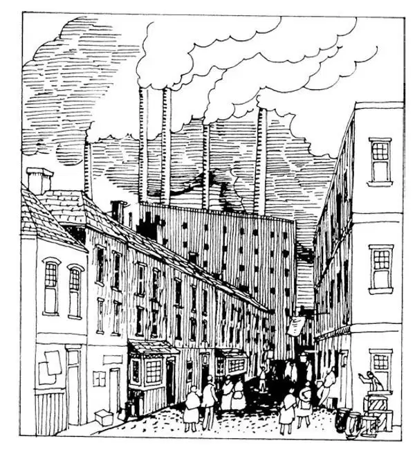

83
A Different Kind of Revolution
另一种革命

JAMES Watt's steam engine and Robert Fulton's steam powered ship were part of a revolution—a different kind of revolution. Usually we think of a revolution as being like the American Revolution or the French Revolution when people fought a war against a government. But this revolution took place slowly and without any armies. Yet it certainly did change the world. It is called the Industrial Revolution.
In the last chapter, I told you about some of the wonderful inventions like cars, airplanes, radios, and televisions that we have because of the Industrial Revolution. That's the fun part. But a lot of other things happened, too. This peaceful revolution changed the world every bit as much as the big wars— maybe more! Here's how.
All those wonderful new things were made in factories. The first factories were built in England. They made cloth and then clothing. Later they made railroad cars and tracks. Soon English factories were making all sorts of good things, and England began to grow very rich and powerful.
In some ways countries are just like boys and girls. You know that sometimes, when one student in a class brings in a new toy or wears a new jacket, everybody else wants one, too. Well, soon other countries wanted to be like England and they began building factories so they would be rich and powerful, too. A lot of European countries like France, Germany, and Italy did this. So did the United States and Japan. Soon all these places were making lots of things in their factories. They made clothes and furniture. They made cars and even candy. This was called the Industrial Revolution.
We all know that now we can go to the store and buy these things that are made in factories. But would that be enough of a change to call it a REVOLUTION? Well, maybe yes, maybe no. But there were other things that began happening as soon as the factories were built. All of these things together really were a revolution.
One big change happened like this. A lot of people came to work in the new factories. You wouldn't have much of a factory if nobody worked there, would you? It took a lot of men and women to work in the factories. Families left the countryside. They stopped farming and became factory workers. The men who built the factories wanted so many workers that they even paid children to work there. This wasn't very good for the children, though, because they didn't get to go to school. It also wasn't very good because those early factories had a lot of unsafe machines and sometimes the children and the grownups, too, got hurt. Despite all that, lots of men, women, and children came to work. So one big change is that many people stopped farming and became factory workers. Which would you rather do? Why?
Some people had been making things at home—like candles or soap or sweaters to sell. When a family does this, it's called a cottage industry because they work in their cottage. After the Industrial Revolution, factories made many of the same things. Since a factory made so many sweaters, for example, so fast, it could sell them for less money than an individual could. Because of this, many people who had worked at home had to go to work in factories.
Most of the factories were built in cities. Coming to work in the factory meant coming to live in a city. Soon the cities got very crowded. In those early days people had to live close together, because they had to live near their jobs so they could walk to work.
How far would you be willing to walk to work or school? People often walked a mile or two each way. After trolley cars were invented, people could live farther away from work. At first, trolleys were pulled along tracks on city streets by horses, and they were slow. By the end of the nineteenth century, electric trolleys became common, and people could live even farther away. So the cities grew larger. Here's a second big change then. Cities grew big like the ones we know today.
Way around the world, even in countries where there weren't any factories yet, people's lives changed, too. You have to stop and think about this for a minute. It may seem hard to believe that the life of a child in Africa, India, Korea, or Hawaii could change just because men in England, America, or Japan built factories. But that's what happened. Here's how.
You know that when you make anything, you have to make it out of something . So the factories that made clothes and furniture, cars and candy had to make these out of something. Some factories made clothes out of cotton that grew in India. Other factories made furniture out of the wood from trees that grew in forests in Africa, Asia, and the countries around the Caribbean Sea. Cars have to have tires, and they are made out of rubber that comes from rubber trees that grow in forests in Africa, Asia, and South America. To make candy, you use sugar that comes from plants that grow in places like Hawaii and Cuba. Now you can begin to see why the Industrial Revolution was felt around the world.
The countries that built the factories needed supplies from all around the world. Those countries were strong and had the advantage of modern ships and weapons built in their factories, so the industrialized countries soon moved in and took over a lot of places that had the supplies they wanted—the places where cotton grew, where trees like mahogany and rubber grew, where sugar cane grew. England, France, Germany, and other European countries made colonies of most of Africa and a lot of Asia as well. Japan conquered Korea and some other places nearby. Even the United States came to own places like Hawaii and the Philippines although we didn't call these our colonies.
Now the people who lived in all these places weren't very happy to have foreigners coming in and taking over. They felt the same way about them that you might feel about a bully at school. They didn't like that big guy who wanted to push all the little guys around. Sometimes the conquerors brought good things, like modern medical care. But, still, nobody really wants to be bossed around by somebody else. So, less than a hundred years later, the colonies around the world rose up, just as we did during the American Revolution, and fought to become independent. You'll read more about this later.

Urban factories spewing smoke （喷着烟的城市工厂）
You know that sometimes changes aren't always all good. One bad thing that happened because of the Industrial Revolution was the taking of colonies by the rich industrialized countries. Another bad result of the Industrial Revolution is still troubling us today. That is pollution. Also, many natural resources are being used up or destroyed. Pollution and the loss of natural resources are called environmental problems.
We know that factories that make wonderful things sometimes discharge poisons into the air that we breathe and the water we drink. That is pollution. People can get sick from breathing polluted air and drinking polluted water.
We know that over the years, many of the earth's forests have been cut down so the wood from the trees could be used for building houses and furniture and for making paper. When a forest is destroyed or an ocean is polluted, then the animals that live there have no place to live any more, and so they die out. When there are no more animals of any given kind, we say that they are extinct . Today, a number of animals are in danger of becoming extinct, either because they are being killed or because their homes are being destroyed. Can you name any of these animals?
These are some of the problems caused by the Industrial Revolution that we have not yet solved. Do you have any ideas how they could be solved? There's something for you to talk about.
There are four big things to remember about the Industrial Revolution. A lot of people worked in factories instead of on farms. The towns grew into the large cities that we know today. The industrialized nations became so rich and powerful that they could control most of the rest of the world. And we still have to solve environmental problems that were caused by the Industrial Revolution.
【中文阅读】
詹姆斯•瓦特的蒸汽机和罗伯特•富尔顿的汽船是革命的一部分——与以往不同的另一种革命。通常我们把革命看做像美国革命或法国革命那样，当时人们发动战争反对政府。但是这场革命却是慢慢发生的，而且没有任何军队参与其中。然而它确实改变了世界。这场革命叫做“工业革命”。
在上一章里，我介绍了一些奇妙的发明，比如汽车、飞机、收音机和电视，正因为发生了工业革命，我们才有了这些东西。那是有趣的一面。但是也发生了很多其他事情。这场和平的革命和大规模战争一样彻底改变了世界——可能带来的变化更大！我们来看看它是怎样改变世界的。
所有这些奇妙的新事物都是在工厂制造的。最早一批工厂是在英国建起的。这些工厂生产布料，接着生产服装。后来工厂制造火车车厢和铁轨。不久英国的工厂 就生产各种好东西了，由此英国开始变得非常富有强大。
在有些方面，一个个国家就像是一个个男孩和女孩。你知道有时候，班里有个学生带来一个新玩具或者穿了一件新夹克，其他人见了也都想要。好了，不久其他国家就希望自己也能像英国那样，于是这些国家开始建工厂，好让自己也变得富有、强大起来。很多欧洲国家，比如法国、德国和意大利都这样做了。美国和日本也这样做了。不久所有这些地方的工厂里都制造出大量产品。产品包括服装和家具，还有汽车，甚至糖果。这被称为工业革命。
我们都知道现在我们可以去商店购买工厂生产出来的这些产品。但这样的变化就足以让人称为“革命”吗？好吧，也许可以，也许不可以。但是工厂一建起来，其他事情就开始发生了。所有这些变化合在一起就真是一场革命了。
一个重大的变化是这样发生的。大量的人来到在新工厂工作。如果没有人在工厂工作，你就不可能有一家像样的工厂，是不是？工厂需要大量的男工人和女工人。一个个家庭离开了农村。他们不再务农，而是去工厂当工人。那些建了工厂的厂主需要许许多多的工人，他们甚至雇佣孩子当童工。不过这样做对孩子没有好处，因为他们就不能去上学了。还有一个不大好的方面，是因为这些早期工厂的机器有大量的安全隐患，有时无论孩子还是成人都会受伤。尽管如此，许许多多男人、女人和孩子还是去工厂上班了。所以一个重大的变化是许多人不再耕作，成了工厂的工人。如果是你，你愿意务农还是当工人？为什么？
有些人以前是在家里生产东西出售——像蜡烛啦肥皂啦毛衣等。当一个家庭这样做时，就称为“家庭小工业”，因为他们是在自己的小屋里面工作。工业革命之后，工厂生产同一种商品的效率大大提高。比如既然一家工厂生产毛衣又多又快，它就能卖得比个人织的毛衣要便宜一些。因此，许多以前在家工作的人不得不去工厂上班了。
大多数工厂建在城市里。到工厂上班就意味着要到城市里居住。不久这些城市就变得非常拥挤。在初期，人们不得不住得很密集，因为他们必须住得离工厂近一点，这样才能步行去上班。
你愿意走多远去上班或上学？人们通常单程走一两英里。有轨电车发明以后，人们可以住得离工厂远一些了。起初，车子是用马拉着在城市的街道上沿轨道行驶，速度很慢。到19世纪末期，有轨电车变得很普及，人们甚至可以住得离工厂更远了。于是城市规模变得越来越大了。这就是第二个重大的变化。城市变大了，就像我们如今知道的那些城市一样了。
在世界每个地方，甚至在还没有工厂的国家里，人们的生活也发生变化了。你得停下对这个问题思考片刻。似乎很难相信在非洲、印度、韩国或夏威夷的一个孩子的生活会因为人们在英国、美国或日本建工厂而发生变化。但是这正是实际发生的情况。我们来看看这是怎样发生的。
你知道当你做什么东西时，你必须用“某个东西”做材料。所以生产服装、家具、汽车和糖果的工厂必须用其他东西做材料才能生产这些产品。有些工厂用印度产的棉花做服装。另一些工厂用产自非洲、亚洲和加勒比海周围国家森林里的木材 做家具。汽车必须有轮胎，轮胎是用橡胶做的，橡胶来自于橡胶树，橡胶树生长在非洲、亚洲和南美洲的森林里。你做糖果要用食糖，食糖来自糖料作物，而糖料作物生长在像夏威夷和古巴那样的地方。现在你就可以明白了为什么全世界都感受到了工业革命。
兴建工厂的那些国家需要来自世界各地的原料供应。那些国家都很强大，它们的优势是拥有自己工厂生产出来的坚船利炮，所以“工业化”国家不久就强行插手并接管了许多地方，这些地方都有它们需要的原料供应——例如，盛产棉花、红木、橡胶、甘蔗的地方。英国、法国、德国和其他欧洲国家将大部分非洲国家和许多亚洲国家变成了殖民地。日本占领了朝鲜和其他邻近国家。甚至美国也占据了像夏威夷和菲律宾这样的地方尽管并没有称这些地方为美国的殖民地。
生活在这些地方的人民对外国人的侵占非常不满。他们对这些外国人的不满情绪和你对学校里的恃强凌弱者的不满情绪是一样的。他们不喜欢那个任意摆布弱小者的家伙。有时占领者给当地带来了一些好处，比如现代医疗保健。但是，毕竟没有人真的愿意被别人差来遣去。所以，在不到一百年之后，世界各地的殖民地纷纷起义，就像我们在美国独立战争中做的那样，为争取独立而战斗。关于这方面的故事你将在后面了解到更多的。
你知道有时转变并不总是好的。由于工业革命而产生的弊端之一就是那些富有的工业化国家夺取殖民地。工业革命的另一个恶果至今依然困扰着我们。那就是污染。另外，许多自然资源正在耗尽或被破坏。污染和自然资源的损耗统称为环境问题。
我们知道制造一些美妙产品的工厂有时把有害物质直接排放到我们呼吸的空气中和我们饮用的水源中。那就是污染。人们呼吸了受污染的空气、喝了受污染的水，就会生病。
我们知道，多年以来，地球上的许多森林被砍伐，为的是获取木材盖房子、做家具和造纸。当一片森林被破坏或者一片海域被污染，那么生活在那里的动物就再也没有地方生存，于是就逐渐消失了。当世界上再也没有某种动物时，我们说这种动物“灭绝”了。如今，有些动物处于濒临灭绝的危险中，要么因为正被不断猎杀，要么因为它们的家园正被毁灭。你能说出其中某种动物吗？
以上就是由工业革命造成的一些问题，我们至今还没有解决。你有什么解决这些问题的主意吗？有些问题很值得你们讨论。
关于工业革命要记住四件事情。许多人放弃在农场耕作，去工厂上班。城镇发展成我们现在知道的大城市。工业化国家变得富强起来，这样它们就能控制世界上大多数国家。我们至今仍然不得不解决由工业革命造成的环境问题。